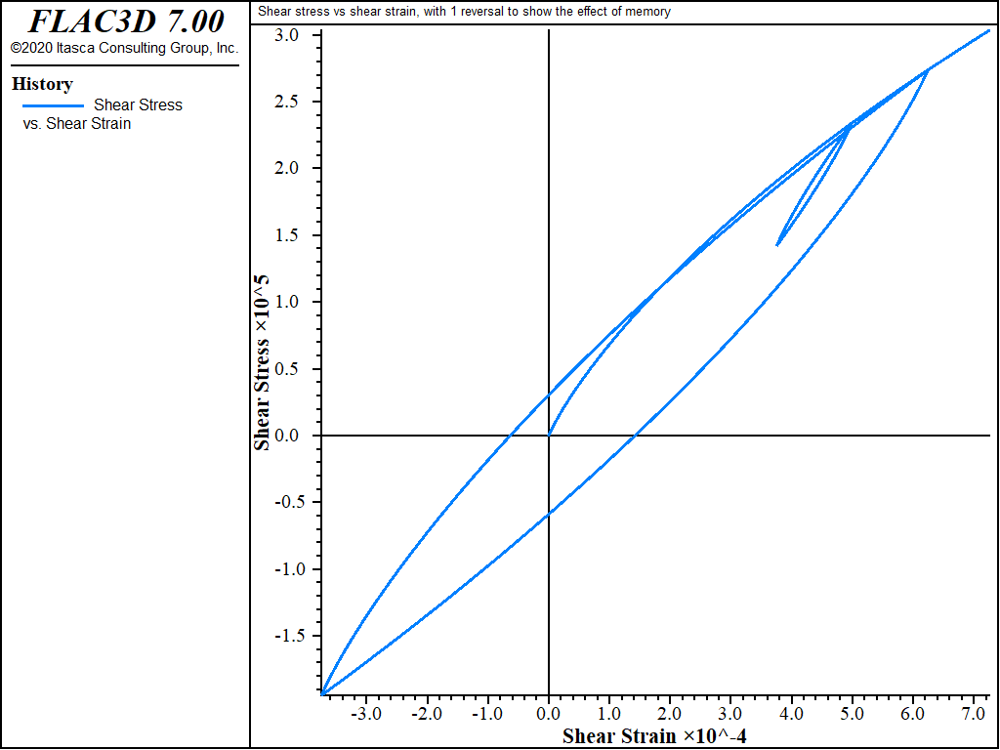

在剪切加载并发生应变率反向的单网格单元试样
注意
要在 FLAC3D 中查看此项目，请使用菜单命令 。选择“Dynamic/ ShearWithStrainRateReversal”并选择“ShearWithStrainRateReversal.f3prj”以加载。 主数据文件见本示例末尾（main data files）。其余数据文件可在项目中找到。
本示例非常简单地说明了滞回阻尼公式（Hysteretic Damping Formulation）中各种规则的工作方式。
一个简单的单网格单元模型在所有自由度上固定，然后通过将顶部的 \(x\) 方向速度初始化为固定值来施加剪应变。该初始加载被一个小的卸载/加载循环打断；此后是一次完全的卸载（直至负应变），随后是加载过程，继续达到比之前更高的正应变水平。特别要注意半尺度的初始加载曲线、每次反向时 \(G_o\) 的斜率，以及在小循环执行完毕后原始加载路径的恢复。在此情况下，小循环闭合时正、负两个栈都被弹出（即整个循环被遗忘），但只有正栈的信息用于恢复状态信息；负栈信息被丢弃。


图 1：剪应力与剪应变关系，包含一次反向以显示记忆效应。
数据文件
;-----------------------------------------------------------------------
; 动力问题所用脚本文件
; '应变率反向的单网格单元试样剪切加载'
;-----------------------------------------------------------------------
model new
model large-strain off
model title ...
"Shear stress vs shear strain, with 1 reversal to show the effect of memory"
model configure dynamic
; 创建网格单元
zone create brick size 1 1 1
; 指定材料模型和参数
zone cmodel assign elastic
zone property density 1000 shear 5e8 bulk 10e8
; 边界条件
zone gridpoint fix velocity
zone gridpoint initialize velocity-x 1e-2 range position-z=1
; 动力设置
model dynamic timestep fix 1e-4
zone dynamic damping hysteretic default -3.5 1.3
history interval 1
; 历史
zone history stress-xz zoneid 1
zone history strain-increment-xz zoneid 1
; 进行多次反向加载循环
model cycle 1000
zone gridpoint initialize velocity-x -1 multiply
model cycle 250
zone gridpoint initialize velocity-x -1 multiply
model cycle 500
zone gridpoint initialize velocity-x -1 multiply
model cycle 2000
zone gridpoint initialize velocity-x -1 multiply
model cycle 2200
⇐ Block Under Gravity — Examining Damping Options | One-Zone Sample Exercised at Several Cyclic Strain Levels ⇒
| 这些内容对您有帮助吗？… | FLAC3D © 2019, Itasca | 原文更新于 2020 年 10 月 8 日 |
| 版权与免责声明 | ||